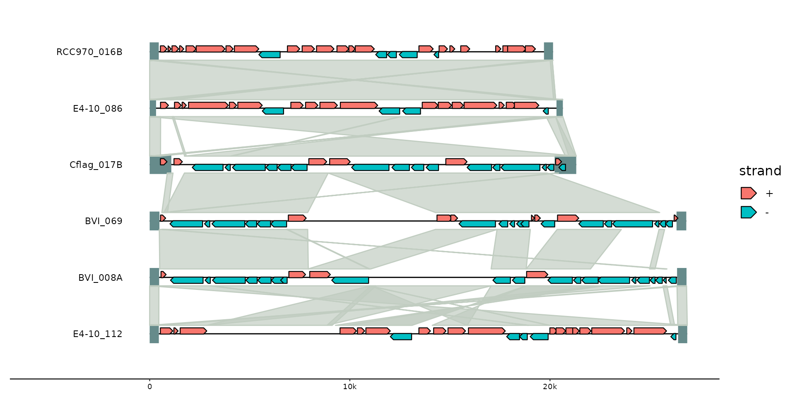
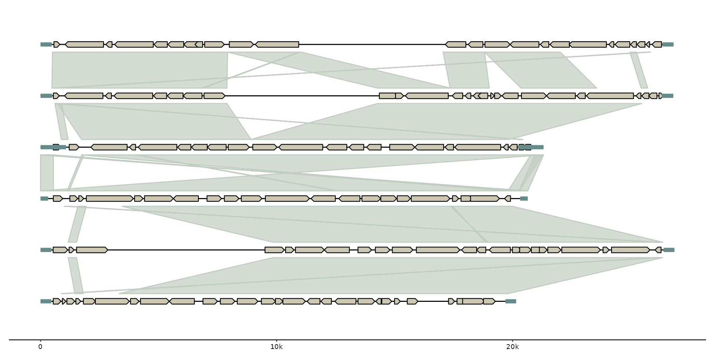
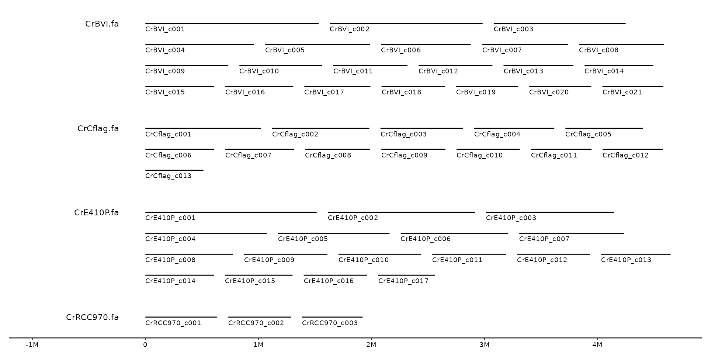
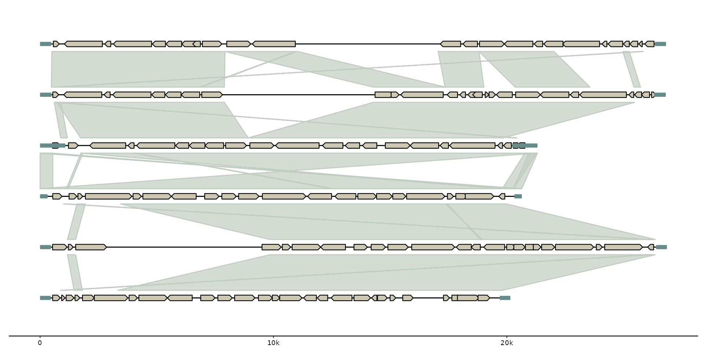
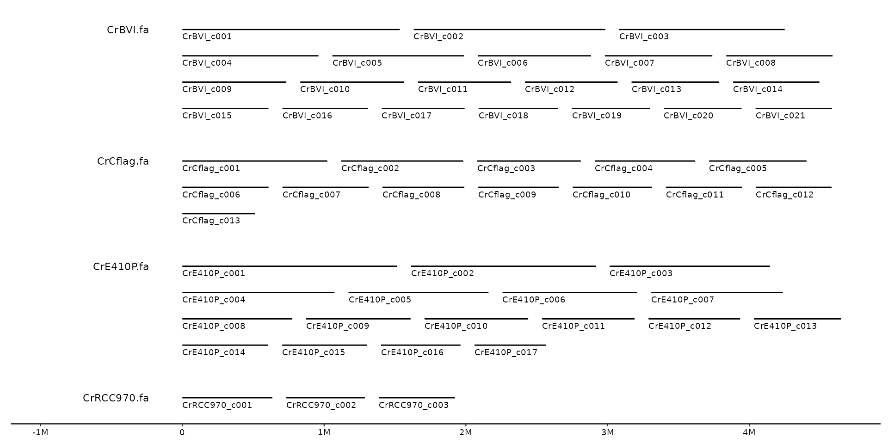

gggenomes() initializes a gggenomes-flavored ggplot object.
It is used to declare the input data for gggenomes' track system.
(See for more details on the track system, gggenomes vignette or the Details/Arguments section)
Arguments
- genes, feats
A data.frame, a list of data.frames, or a character vector with paths to files containing gene data. Each item is added as feature track.
For a single data.frame the track_id will be "genes" and "feats", respectively. For a list, track_ids are parsed from the list names, or if names are missing from the name of the variable containing each data.frame. Data columns:
required:
seq_id,start,endrecognized:
strand,bin_id,feat_id,introns
- seqs
A data.frame or a character vector with paths to files containing sequence data. Data columns:
required:
seq_id,lengthrecognized:
bin_id,start,end,strand
- links
A data.frame or a character vector with paths to files containing link data. Each item is added as links track. Data columns:
required:
seq_id,seq_id2recognized:
start,end,bin_id,start2,end2,bin_id2,strand
- .id
The name of the column for file labels that are created when reading directly from files. Defaults to "file_id". Set to "bin_id" if every file represents a different bin.
- spacing
between sequences in bases (>1) or relative to longest bin (<1)
- wrap
wrap bins into multiple lines with at most this many nucleotides per line.
- adjacent_only
Indicates whether links should be created between adjacent sequences/chromosomes only. By default it is set to
adjacent_only = TRUE. IfFALSE, links will be created between all sequences(not recommended for large data sets)
- infer_length, infer_start, infer_end, infer_bin_id
used to infer pseudo seqs if only feats or links are provided, or if no bin_id column was provided. The expressions are evaluated in the context of the first feat or link track.
By default subregions of sequences from the first to the last feat/link are generated. Set
infer_startto 0 to show all sequences from their true beginning.- theme
choose a gggenomes default theme, NULL to omit.
- .layout
a pre-computed layout from
layout_genomes(). Useful for developmental purposes.- ...
additional parameters, passed to layout
Details
gggenomes::gggenomes() resembles the functionality of ggplot2::ggplot().
It is used to construct the initial plot object, and is often followed by "+" to add components to the plot (e.g. "+ geom_gene()").
A big difference between the two is that gggenomes has a multi-track setup ('seqs', 'feats', 'genes' and 'links').
gggenomes() pre-computes a layout and adds coordinates (y,x,xend) to each data frame prior to the actual plot construction.
This has some implications for the usage of gggenomes:
Data frames for tracks have required variables. These predefined variables are used during import to compute x/y coordinates (see arguments).
gggenomes' geoms can often be used without explicit
aes()mappings This works because we always know the names of the plot variables ahead of time: they originate from the pre-computed layout, and we can use that information to set sensible default aesthetic mappings for most cases.
Examples
# Compare the genomic organization of three viral elements
# EMALEs: endogenous mavirus-like elements (example data shipped with gggenomes)
gggenomes(emale_genes, emale_seqs, emale_tirs, emale_ava) +
geom_seq() + geom_bin_label() + # chromosomes and labels
geom_feat(linewidth= 8) + # terminal inverted repeats
geom_gene(aes(fill = strand), position = "strand") + # genes
geom_link(offset = 0.15) # synteny-blocks

# with some more information
gggenomes(emale_genes, emale_seqs, emale_tirs, emale_ava) %>%
add_feats(emale_ngaros, emale_gc) %>%
add_clusters(emale_cogs) %>%
sync() +
geom_link(offset = 0.15, color = "white") + # synteny-blocks
geom_seq() + geom_bin_label() + # chromosomes and labels
# thistle4, salmon4, burlywood4
geom_feat(linewidth= 6, position = "identity") + # terminal inverted repeats
geom_feat(
data = feats(emale_ngaros), color = "turquoise4", alpha = .3,
position = "strand", linewidth = 16
) +
geom_feat_note(aes(label = type),
data = feats(emale_ngaros),
position = "strand", nudge_y = .3
) +
geom_gene(aes(fill = cluster_id), position = "strand") + # genes
geom_wiggle(aes(z = score, linetype = "GC-content"), feats(emale_gc),
fill = "lavenderblush4", position = position_nudge(y = -.2), height = .2
) +
scale_fill_brewer("Conserved genes", palette = "Dark2", na.value = "cornsilk3")
#> Joining with `by = join_by(feat_id)`
#> Flipping: Cflag_017B,BVI_069,BVI_008A
#> wiggle bounds
#> • mid: 0.38
#> • low: 0.2
#> • high: 0.76
 # initialize plot directly from files
gggenomes(
ex("emales/emales.gff"),
ex("emales/emales.gff"),
ex("emales/emales-tirs.gff"),
ex("emales/emales.paf")
) + geom_seq() + geom_gene() + geom_feat() + geom_link()
#> Reading 'gff3' with `read_gff3()`:
#> * file_id: emales [/home/runner/work/_temp/Library/gggenomes/extdata/emales/emales.gff]
#> Harmonizing attribute names
#> • ID -> feat_id
#> • Name -> name
#> • Note -> note
#> Features read
#> # A tibble: 1 × 3
#> source type n
#> <chr> <chr> <int>
#> 1 MFG CDS 143
#> Reading 'gff3' with `read_gff3()`:
#> * file_id: emales-tirs [/home/runner/work/_temp/Library/gggenomes/extdata/emales/emales-tirs.gff]
#> Harmonizing attribute names
#> • ID -> feat_id
#> • Name -> name
#> Features read
#> # A tibble: 1 × 3
#> source type n
#> <chr> <chr> <int>
#> 1 MFG repeat_region 12
#> Reading 'paf' with `read_paf()`:
#> * file_id: emales [/home/runner/work/_temp/Library/gggenomes/extdata/emales/emales.paf]
#> Warning: Found tags in max_tags column, you should increase max_tags to
#> Read and tidied up a .paf file with 10 optional tag fields:
#> NM, ms, AS, nn, tp, cm, s1, de, rl, cg
#> Note: warnings about fewer than expected columns are expected for this format.
#> Note: .paf files use 0-based coordinate starts - transforming to 1-based
#> Reading 'gff3' with `read_seq_len()`:
#> * file_id: emales [/home/runner/work/_temp/Library/gggenomes/extdata/emales/emales.gff]

# multi-contig genomes wrap to fixed width
s0 <- read_seqs(list.files(ex("cafeteria"), "Cr.*\\.fa.fai$", full.names = TRUE))
#> Reading 'fai' with `read_fai()`:
#> * file_id: CrBVI.fa [/home/runner/work/_temp/Library/gggenomes/extdata/cafeteria/CrBVI.fa.fai]
#> * file_id: CrCflag.fa [/home/runner/work/_temp/Library/gggenomes/extdata/cafeteria/CrCflag.fa.fai]
#> * file_id: CrE410P.fa [/home/runner/work/_temp/Library/gggenomes/extdata/cafeteria/CrE410P.fa.fai]
#> * file_id: CrRCC970.fa [/home/runner/work/_temp/Library/gggenomes/extdata/cafeteria/CrRCC970.fa.fai]
s1 <- s0 %>% dplyr::filter(length > 5e5)
gggenomes(seqs = s1, infer_bin_id = file_id, wrap = 5e6) +
geom_seq() + geom_bin_label() + geom_seq_label()

# initialize plot directly from files
gggenomes(
ex("emales/emales.gff"),
ex("emales/emales.gff"),
ex("emales/emales-tirs.gff"),
ex("emales/emales.paf")
) + geom_seq() + geom_gene() + geom_feat() + geom_link()
#> Reading 'gff3' with `read_gff3()`:
#> * file_id: emales [/home/runner/work/_temp/Library/gggenomes/extdata/emales/emales.gff]
#> Harmonizing attribute names
#> • ID -> feat_id
#> • Name -> name
#> • Note -> note
#> Features read
#> # A tibble: 1 × 3
#> source type n
#> <chr> <chr> <int>
#> 1 MFG CDS 143
#> Reading 'gff3' with `read_gff3()`:
#> * file_id: emales-tirs [/home/runner/work/_temp/Library/gggenomes/extdata/emales/emales-tirs.gff]
#> Harmonizing attribute names
#> • ID -> feat_id
#> • Name -> name
#> Features read
#> # A tibble: 1 × 3
#> source type n
#> <chr> <chr> <int>
#> 1 MFG repeat_region 12
#> Reading 'paf' with `read_paf()`:
#> * file_id: emales [/home/runner/work/_temp/Library/gggenomes/extdata/emales/emales.paf]
#> Warning: Found tags in max_tags column, you should increase max_tags to
#> Read and tidied up a .paf file with 10 optional tag fields:
#> NM, ms, AS, nn, tp, cm, s1, de, rl, cg
#> Note: warnings about fewer than expected columns are expected for this format.
#> Note: .paf files use 0-based coordinate starts - transforming to 1-based
#> Reading 'gff3' with `read_seq_len()`:
#> * file_id: emales [/home/runner/work/_temp/Library/gggenomes/extdata/emales/emales.gff]

# multi-contig genomes wrap to fixed width
s0 <- read_seqs(list.files(ex("cafeteria"), "Cr.*\\.fa.fai$", full.names = TRUE))
#> Reading 'fai' with `read_fai()`:
#> * file_id: CrBVI.fa [/home/runner/work/_temp/Library/gggenomes/extdata/cafeteria/CrBVI.fa.fai]
#> * file_id: CrCflag.fa [/home/runner/work/_temp/Library/gggenomes/extdata/cafeteria/CrCflag.fa.fai]
#> * file_id: CrE410P.fa [/home/runner/work/_temp/Library/gggenomes/extdata/cafeteria/CrE410P.fa.fai]
#> * file_id: CrRCC970.fa [/home/runner/work/_temp/Library/gggenomes/extdata/cafeteria/CrRCC970.fa.fai]
s1 <- s0 %>% dplyr::filter(length > 5e5)
gggenomes(seqs = s1, infer_bin_id = file_id, wrap = 5e6) +
geom_seq() + geom_bin_label() + geom_seq_label()
